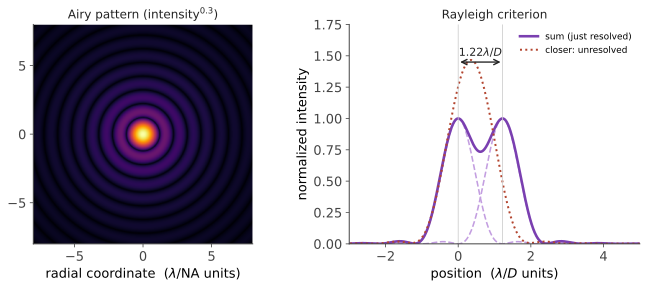

本页目录
光学 IV · 衍射与傅里叶光学
层次：本科核心 + 研究生工具 ｜ 这是全课最美的一页。 衍射给出几何光学永远给不出的东西——分辨率的物理极限。而傅里叶光学揭示了一个惊人的事实：一枚透镜在做傅里叶变换。这个视角让"成像"变成"滤波"，把整个光学系统纳入了信号处理的语言（🔗 数学站傅里叶分析、cs 站信号处理）。
学习层：孔径不是黑框，而是一只频率选择器
1. 具体谜题：缩小孔径后，为什么条纹变宽？
在夫琅禾费区域，把一维孔径看成宽度 \(a\) 的矩形。远场振幅与 \(\operatorname{sinc}(\pi a f_x)\) 成正比。先预测：若孔径宽度从 \(a=1\) 缩为 \(a=0.5\)，第一零点的空间频率会向内还是向外移动，远场图样会变窄还是变宽？再把一个低频大方块和一条高频细线放进同一物面，圆形光阑收掉外围频谱时，哪一个细节先消失？
2. 先预测：滤波器放在什么面才真正按频率工作？
先写下三项预测：① 透镜前焦面上的物体到后焦面会变成什么；② 在后焦面挡住中心低频，输出会更平滑还是更突出边缘；③ 两点间距从 \(0.8\,d_{\min}\) 变成 \(1.2\,d_{\min}\) 时，Rayleigh 凹陷会更明显还是被孔径挡掉。拖动 NA 和遮挡半径后，再区分“新增了信息”和“重排了已有频率”。
3. 最小 mental model：物体频谱乘以孔径
把透明物体简化为透射函数 \(t(x,y)\)，把透镜后焦面看成空间频率平面。理想透镜把 \(t\) 的傅里叶分量按坐标分开；有限孔径只允许通带内的频率通过；第二枚透镜把保留下来的频谱反变换回像面。于是“成像”可以先在频域做乘法，再回到空间域观察。
4. 正式机制：傅里叶面、截止频率与分辨率
远场与前焦面关系为
若孔径函数是 \(P(f_x,f_y)\)，相干 4f 系统的输出场频谱为
其中 \(H\) 是额外滤波器，相干照明的圆孔近似截止频率为 \(f_{c,\mathrm{coh}}=\mathrm{NA}/\lambda\)。若探测的是非相干照明下的强度，则应写成
其圆孔强度传递函数的支持截止为 \(f_{c,\mathrm{inc}}=2\mathrm{NA}/\lambda\)；此时 \(\lvert\mathcal F\{\mathrm{PSF}\}\rvert\) 才是对应的 MTF。下文的静态频谱账本和脚本采用非相干强度/MTF 的教学代理，不能把两个 cutoff 混为一个。圆孔的 Airy 尺度与 \(d_{\min}=0.61\lambda/\mathrm{NA}\) 相连：截止频率之外没有被探测的相位与幅度，后续算法没有观测方程可以唯一恢复它。
5. 静态实验：从孔径到频谱再到像
无 JavaScript 时的静态读法：取 \(\lambda=0.5\,\mu\mathrm m\)、\(\mathrm{NA}=0.50\)，则
对矩形孔径 \(a=1\,\mu\mathrm m\)，场幅度第一零点在 \(f_x=1/a=1\) cycles/\(\mu\)m；\(a=0.5\) 时第一零点移到 2，频谱展宽。一个采用非相干强度 cutoff 的静态频谱账本可以这样读：输入频率 \([0.4,1.2,2.4]\)，\(f_{c,\mathrm{inc}}=2\) 时通带支持前两项、丢掉 2.4；矩形孔径的 \(\operatorname{sinc}^2\) 包络还会把 1.2 显著衰减，但它仍未被硬截掉，脚本因此把正的包络值计为“通过”并显示较低的柱。若改用相干场 cutoff \(f_{c,\mathrm{coh}}=1\)，则 1.2 和 2.4 都在通带外。中心挡块去掉 0.4 后，低频底座减弱而边缘项相对突出。脚本可切换单缝/圆孔、NA、中心挡块与双点间距，显示孔径、频谱通带、PSF 横截面和被保留的离散频率；先预测哪一项消失，再揭示。
6. 反例与边界：漂亮的重建不等于超越衍射
- 孔径越小，频谱通带越窄、空间图样越宽。用几何光线只画出“能到达”的路径，不能得到 Airy 斑和两个点的可分辨条件。
- 4f 滤波位置很关键。把遮挡片放在像面不是同一个频率选择器；频谱面需要正确的焦距、共轭关系和对准。
- 反卷积不能补回未采样频率。当传递函数接近零时，噪声被反卷积一并放大；若高频来自强先验或新照明，那是另一个测量模型，不是凭空恢复。
- Rayleigh 判据是约定的可分辨标准。改变判据、信噪比或点源强度，会改变实际检测概率；\(0.61\) 不是所有任务的唯一“清晰度”。
7. 迁移题：给一个成像任务写频域规格
为显微镜检测一组已知周期的线栅，选择 \(\lambda\)、NA 与频谱滤波器，使目标频率进入通带并保留足够的 SNR。若只能做算法增强，请列出它实际依赖的先验；若要把原本截止外的频率搬回通带，你会改用结构光、近场探测还是多角度照明，新增的物理观测是什么？
一、衍射与分辨率极限
为什么有极限：任何光学系统的孔径都是有限的，它截断了波前 → 即使没有像差，点光源的像也不是点，而是艾里斑。
圆孔的艾里斑角半径：
瑞利判据：两点可分辨，当一个点的中心落在另一个点的第一暗环上。在像空间给出分辨极限：

三条工程推论：
① 提高分辨率只有两条路：减小 \(\lambda\) 或增大 NA。 这正是 🔗 微电子站第十二页光刻演进的全部逻辑（193 nm → 浸没提高 NA → EUV 减小 \(\lambda\) → High-NA）。两个学科在这里用的是同一个公式。
② 增大 NA 有物理上限：\(\mathrm{NA}=n\sin\theta < n\)。空气中 NA < 1；浸没（提高 \(n\)）是唯一出路——显微镜的油浸物镜（NA 可达 1.4）与光刻的水浸（NA 1.35）是同一个思想。
③ 相机的最佳光圈：收小光圈减小像差（第二页），但衍射斑随 F 数线性增大（\(d\approx 1.22\lambda F/\#\)）。两条曲线相交处即最佳光圈——这解释了为什么每支镜头都有一个"最锐光圈"。
二、标量衍射理论
惠更斯-菲涅耳原理的数学化。两个重要区域：
- 菲涅耳衍射（近场）：菲涅耳数 \(N_F = a^2/(\lambda z) \gtrsim 1\)；
- 夫琅禾费衍射（远场）：\(N_F \ll 1\)，衍射图样正比于孔径函数的傅里叶变换：
这是傅里叶光学的起点：远场 = 傅里叶变换。
几个立即可用的结论：
- 单缝 → sinc；圆孔 → 艾里（一阶贝塞尔）；
- 光栅 → 一系列衍射级次，方程 \(d\sin\theta = m\lambda\)。这是所有光谱仪的核心（第十七页）；
- 孔径越小，衍射越发散——这是"缩小光斑"与"保持准直"之间的根本矛盾。
三、透镜做傅里叶变换
核心结论：把物体放在透镜前焦面，后焦面上的场分布正是物体的傅里叶变换（相位因子在严格前焦面时消失）。
这个事实的分量：一枚玻璃透镜，以光速、并行、零功耗地完成了二维傅里叶变换。 电子计算机做同样大小的 2D FFT 需要可观的时间与能量。这正是"光计算"长期的诱惑所在（第十九页会诚实讨论它为何仍未普及）。
后焦面因此称为"频谱面"或"傅里叶面"——空间频率在这里被物理地分开：中心是低频（整体亮度与缓变），外围是高频（细节与边缘）。
四、4f 系统：成像即滤波
4f 结构：物面 → 透镜1（\(f\)）→ 频谱面（\(2f\) 处）→ 透镜2 → 像面（\(4f\) 处）。
两次傅里叶变换 = 成像（倒像）。关键在于：可以在频谱面上放置滤波器，直接操作空间频率。
这把成像系统变成了一个线性滤波器：
- PSF（点扩散函数） = 系统对点源的响应（理想时即艾里斑）；
- OTF（光学传递函数） = PSF 的傅里叶变换；其模即 MTF（第十一页详谈）；
- 孔径的有限大小 = 一个低通滤波器——这就是分辨率极限的傅里叶语言：高于截止频率 \(f_c = 2\mathrm{NA}/\lambda\) 的信息根本没有进入系统。
"信息没进来就永远补不回来" —— 这一点在第十一页讨论"能否用算法超越衍射极限"时至关重要。
经典的空间滤波应用（都极直观）：
- 低通（中心小孔）：滤除高频 → 激光空间滤波/扩束整形，去除光路杂散；
- 高通（中心挡块）：暗场成像，边缘增强；
- 相位对比（Zernike，诺奖）：给零级光加 \(\lambda/4\) 相移，把透明样品的相位差转成强度差——这是活细胞无需染色即可观察的原理，也是"相位翻译成强度"（第三页）的又一实例；
- 匹配滤波：光学模式识别。
五、超越衍射极限？
必须分清两类"超越"：
① 真正获取了本已丢失的高频信息——需要新的物理途径：
- 结构光照明（SIM）：用条纹照明把高频信息"混频"搬入通带，重建后分辨率约提高一倍；
- 近场扫描（NSOM）：在近场直接探测倏逝波，突破远场限制；
- 单分子定位（PALM/STORM）与 STED（诺奖）：利用荧光分子的开关或受激辐射抑制，逐个定位分子中心——分辨率可达纳米级。注意它们并未突破衍射，而是绕过了它（对单个可分离的发光点，其中心位置可以定得远比艾里斑小）；
② 只是让已有信息更好看——反卷积。它能补偿传递函数的衰减，但对截止频率之外的信息无能为力，且会放大噪声。声称"用 AI 超越光学极限"的工作，多数属于这一类或依赖强先验——判读时要问：这些高频信息是从哪里来的？
六、要点
- 分辨率极限 \(0.61\lambda/\mathrm{NA}\) 只取决于波长与孔径，与加工水平无关；提高只有减小 \(\lambda\) 或增大 NA 两条路（与光刻同理）；
- 远场衍射 = 傅里叶变换；透镜后焦面就是频谱面；
- 透镜以光速零功耗完成 2D 傅里叶变换——光计算的长期诱惑；
- 4f 系统把成像变成滤波，孔径即低通滤波器，截止频率 \(2\mathrm{NA}/\lambda\)；
- 相位对比把相位变成强度，是活细胞观察的基础；
- 超分辨要么引入新物理途径，要么只是反卷积——没进来的信息补不回来。
下一页：光还有一个几何光学完全忽略的属性——偏振。它在液晶显示、应力检测、光通信与量子光学中都是核心。